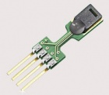
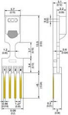

SHT75: Digitaler Präzisionssensor für Feuchte und Temperatur
Der digitale SHT75 Feuchtesensor ist vollständig kalibriert und dank steckbarem Pin-Type Package (für 1.27mm Sockets) einfach zu montieren.
Mit individueller Kalibration und digitalem Output (CMOSens® Technologie) ist der SHT75 vollständig austauschbar. Das erspart die mühsame und aufwändige Rekalibrierung im Falle eines Sensorwechsels/-austauschs.
Der Sensorkopf ist nur durch eine dünne Brücke mit den
Pins verbunden und dadurch optimal thermisch isoliert, was nochmals für verbesserte Ansprechzeiten sorgt. Die Pins sind vergoldet und damit sehr korrosionsbeständig.
Eigenschaften:
- Kombinierte relative Feuchte- und Temperaturmessung
- Präzise Taupunkt-Messung
- Vollständig kalibriert, ohne Rekalibration austauschbar
- Digitales 2-Wire Interface
- Sehr kurze Ansprechzeit
- Ausgezeichnete Langzeitstabilität (Rückkehr zur angegebenen Genauigkeit auch nach Eintauchen in Wasser und Betauung)
- Hohe Verlässlichkeit (industrieller CMOS Prozess)
- Low-Power Fähigkeit
- Selbsttest-Fähigkeit der Sensorelemente
- Heizbare Sensorelemente für exzellente Präzision und Stabilität
Einsatzmöglichkeiten
- Präzises Data Logging
- Transmitter
- Automation & Prozesskontrolle
- Gebäudesteuerung / HLK
- Hochwertige Konsumgüter
Technische Daten
Relative Feuchte:
- Bereich: 0...100% rF
- Genauigkeit: ±1,8 % rF
- Ansprechzeit: 4 Sek.
- Reproduzierbarkeit: ±0.1 % rF
- Auflösung: 0.03 % rF
Temperatur:
- Bereich: -40°C - 120°C
- Genauigkeit: ±0.3°C @ 25°C
- Ansprechzeit: 20 Sek.
- Reproduzierbarkeit: 0.1 °C
- Auflösung: 0.01°C
Anhang:
Berechnung:
Mit Hilfe einiger Formeln lässt sich aus Temperatur und Luftfeuchtigkeit auch die Relative Luftfeuchtigkeit und einiges anderes Berechnen.
Hier die Formel dazu:
| Kürzel: | Beschreibung: |
| r | relative Luftfeuchte |
| T | Temperatur in °C |
| TK | Temperatur in Kelvin (TK = T + 273.15) |
| TD | Taupunkttemperatur in °C |
| DD | Dampfdruck in hPa |
| SDD | Sättigungsdampfdruck in hPa |
| R* | universelle Gaskonstante (8314.3 J/(kmol*K)) |
| mw | Molekulargewicht des Wasserdampfes (18.016 kg) |
| AF | absolute Feuchte in g Wasserdampf pro m3 Luft |
| Nr.: | Formel: |
| 1 | SDD(T) = 6.1078 * 10^((a*T)/(b+T)) |
| 2 | DD(r,T) = r/100 * SDD(T) |
| 3 | r(T,TD) = 100 * SDD(TD) / SDD(T) |
| 4 | TD(r,T) = b*v/(a-v) mit v(r,T) = log10(DD(r,T)/6.1078) |
| 5 | AF(r,TK) = 10^5 * mw/R* * DD(r,T)/TK |
| 6 | 6. AF(TD,TK) = 10^5 * mw/R* * SDD(TD)/TK |